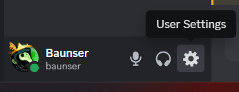
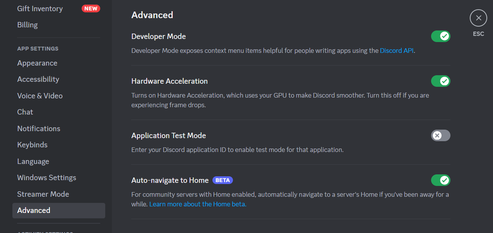
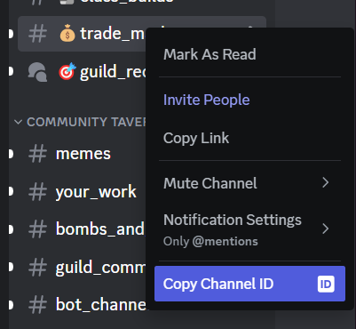

Configuring: main menu
Once the bot is set up:
- Enable developer mode (if not already): User Settings → "Advanced" → turn on "Developer Mode".


- Copy the channel ID: right click the target channel in the channel list → "Copy Channel ID".

- In
config.ymlfinddiscord-bot → main-menu → channel, paste the ID, setenabledtotrueand adjust the rest to taste. Restart the server and the menu appears.
discord-bot:
# ...
main-menu:
enabled: true
# channel ID holding the main menu
channel: '123456789012345678'
# other options: icons, colours, refresh interval, ...
Set that channel to read-only for players and let the bot clean up old messages.